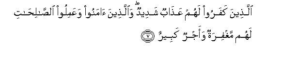

بسم الله الرحمن الرحيم
Sayyid Abul Ala Maududi - Tafhim al-Qur'an - The Meaning of the Qur'an
 35.
Surah Fatir (The Originator), also known as Surah Al Malaika (The
Angels)
35.
Surah Fatir (The Originator), also known as Surah Al Malaika (The
Angels)
The word Fatir of the first very verse is the title given to this Surah, which simply means that it is a Surah in which the word Fatir has occurred. The other name is Al Malaika, which also occurs in the first verse.
The internal evidence of the style shows that the period of the revelation of this Sarah is probably the middle Makkan period, and especially that part of it, when antagonism had grown quite strong and every sort of mischief was being adopted to frustrate the mission of the Holy Prophet.
The discourse is meant to warn and reprove the people of Makkah and their chiefs for their antagonistic attitude that they had then adopted towards the Holy Prophet's message of Tauhid, like a well wisher, and also to admonish them like a teacher, as if to say: "O foolish people, the way to which this Prophet is calling you is to your own advantage. Your anger, your tricks and machinations against it and your conspiracies and designs to frustrate it are not directed against him but against your own selves. If you do not listen to him, you will be harming your own selves, not him. Just consider and ponder over what he says : there is nothing wrong in it. He repudiates shirk. If you look around carefully, you will yourself realize that there is no basis for shirk in the world. He presents the doctrine of Tauhid. If you use your common sense, you will come to the conclusion that there is no being, beside Allah, Creator of the Universe, which might possess divine attributes and powers and authority. He tells you that you have not been created to be irresponsible in this world, but you have to render an account of your deeds before your God, and that there is life after the life of this world when everyone will meet the consequences of what he has done here. If you thing a little you will see that your doubts and your astonishment about it are absolutely baseless. Don't you see the phenomenon of the reproduction of creation day and night. How can then your own recreation be impossible for that God Who created you from an insignificant sperm drop? Doesn't your own intellect testify that the good and the evil cannot be alike? Then think and judge for yourselves as to what is reasonable, should the good and the evil meet with the same fate and end up in the dust, or should the good be requited with good and the evil with evil? Now, if you do not admit and acknowledge these rational and reasonable things and do not abandon your false gods, and wish to continue living only as irresponsible people in the world, the Prophet will not lose anything. It is you yourselves only who will suffer the consequences. The Prophet's only responsibility was to make the truth plain to you, which be has done."
In this connection, the Holy Prophet has been consoled again and again, as if to say :"When you are doing full justice to the preaching of your mission, you do not incur any responsibility for those who persist in their error and do not accept and follow the right way." Furthermore, he has also been consoled to the effect "You should neither grieve on account of those who do not want to believe, nor consume yourself with the thought of how to bring them to the rights path. Instead of this, you should pay your full attention to those who are inclined to listen to you."
The believers also, in this connection, have been given the good news so that they may feel strengthened and encouraged and remain steadfast on the path of the truth with full faith in the promises made by Allah.

In the name of Allah, the Compassionate, the Merciful.
[1-2] Praise is only for Allah, Who is the Creator of the heavens and the earth and the Employer of the angels1 having wings in twos and threes and fours,2 as His messengers. He adds to His creation as He pleases3 Surely Allah has power over everything. Whatever door of mercy Allah may open for the people, none can withhold it, and the door that He closes, none has the power to open it after Him.4 He is the All-Mighty, the All-Wise.5

[3-4] O people, remember the favors Allah has done to you.6 Is there beside Allah any other creator also, who provides for you from the heavens and the earth? There is no god but He. From where then are you being deceived?7 Now (O Prophet,) if these people treat you as a liar,8 (it is not a new thing, as) many Messengers before you also have been treated as liars. And all affairs shall ultimately be presented before Allah.9

[5-7] O people, the promise of Allah is surely true.10 Therefore, let not the worldly life deceive you,11 nor let that great deceiver deceive you concerning Allah.12 Indeed, Satan is your enemy; therefore, you also should treat kiln as your enemy. He is inviting his followers towards his way so that they may join the dwellers of Hell. Those who disbelieve13 shall have a severe punishment, and those who believe and do good works shall have forgiveness and a rich reward.14
[8-9] (Can15 the deviation of that person be imagined) whose evil deed is made seem fair to him and he deems it as good?16 The fact is that Allah leads astray whomsoever He pleases and shows the Right Way to whomsoever He pleases. So, (O Prophet,) let not yourself be consumed with grief for the sake of these people.17 Allah is aware of whatever they are doing.18 Allah it is Who sends the winds; then they raise the cloud, then We drive it towards a waste land and revive it thereby after its death. Likewise shall be the Resurrection of the dead men.19
[10] Whoever seeks honor should know that the honor wholly belongs to Allah.20 Only the pure Word rises up to Him, and the righteous deed causes it to rise.21 As for those who plot evil,22 there is a severe torment for them, and their plotting shall itself perish.
[11-14] Allah23 created you from dust, then from the sperm-drop,24 then made you pairs (i.e., male and female). No woman conceives or is delivered but it is in the knowledge of Allah. No aging person grows old nor is anything reduced of his age except in accordance with a Book25 this is an easy thing for Allah.26 And the two bodies of water are not alike.27 One is sweet and thirst-quenching, pleasant to drink, while the other is saltish and pungent; yet from both you get fresh flesh28 and bring out decorations to wear,29 and in the same waters you see the ships which plough through it so that you may seek Allah's bounty and be grateful to Him. He causes the night to pass into the day and the day into the night30 and He has subjected the sun and the moon till an appointed time.31 The same Allah (Whose works are these) is your Lord: Sovereignty is His. Those whom you invoke instead of Him do not own even a blade of grass.32 If you call them, they cannot hear your prayers, and if they hear, they cannot answer you,33 and on the Day of Resurrection they will disown your shirk.34 None can inform you of the truth except the One Who is All-Aware.35

[15-24] O people it is you who stand in need36 of Allah: Allah is Self-Sufficient and Self-Praiseworthy.37 If He wills He can remove you and bring a new creation in your place: this is not at all difficult for Allah.38 No bearer of a burden will bear another's burden,39 and if a laden soul cries out for help, none will come forward to share the least of its burden, even though it be the nearest kinsman.40 (O Prophet,) you can only warn those who fear their Lord though they cannot see Him, and establish the Salat.41 Whoever adopts purity does so for his own good, and to Allah shall all return. The blind and the seeing are not alike, nor are the darknesses and light alike, nor are the cool shade and the heat of the sun, nor the living and the dead alike.42 Allah causes whomever He wills, to hear, but (O Prophet,) you cannot make those who are buried in the graves to hear you.43 You are only a warner.44 We have sent you with the Truth, as a bearer of good news and a warner. And there has been no nation which was not visited by a warner.45
[25-26] Now if they treat you as a liar, those who lived before them also treated (their Messengers) as liars. Their Messengers came to them with clear proofs46 and Scriptures and the enlightening Book.47 Then I seized those who disbelieved, and behold, how terrible was My punishment!
[27-28] Do you not see that Allah sends down rainwater from the sky and we bring forth thereby a variety of fruits of different colors? In the mountains also there are streaks, white and red and black, with different hues. And likewise, men, beasts and cattle also have different colors.48 The fact is that only those of His servants, who possess knowledge, fear Allah.49 Surely, Allah is All-Mighty, All-Forgiving.50


[29-35] Those who recite the Book of Allah and establish the Salat, and spend out of what We have given them, secretly and openly, do hope for a bargain which involves no loss. (They have invested their all in this bargain) so that Allah may give them their full rewards and bless them with even more from His grace.51 Surely, Allah is Forgiving and Bounteous.52 (O Prophet,) the Book that We have sent to you by revelation is the very Truth, which confirms the previous Scriptures.53 Allah is indeed well aware of His servants, and watchful over everything.54 Then We made those people heirs of this Book, whom We chose (for this inheritance) from among Our servants55 Now someone of them is being unjust to his own self, and someone following a middle course, and someone excelling in good deeds by Allah's leave. This is the supreme bounty.56 There are everlasting Gardens which they shall enter57 to be decorated with bracelets of gold and pearls, and their dress will be of silk. They will say, "Praise be unto Allah Who has removed sorrow from us.58 Surely, our Lord is Forgiving and Bounteous,59 Who by His grace has lodged us in an eternal abode.60 Here we do neither experience any trial nor any weariness."61
[36-37] And for those who have disbelieved62 there is the Fire of Hell: neither will , it be decreed that they should die, nor will the torment of Hell be lightened for them in any way. Thus do We requite every disbeliever. There they will cry out and say, "Our Lord, take us out from here so that we may do good works other than those which we had been doing." (The reply will be) "Did We not give you lives long enough so that he who would, could take a warning?63 And the warner also had come to you. Now taste (the torment). The wicked will have no helper here."
[38-39] Surely, Allah is aware of every secret thing in the heavens and the earth: He even knows the hidden secrets of the breasts. He it is Who has made you vicegerents in the earth.64 Now whoever disbelieves shall himself bear the burden of his disbelief,65 and for the disbelievers their disbelief does not increase anything except the wrath of their Lord and the disbelievers do not gain anything except an increase in their loss.
[40-41] (O Prophet,) say to them, "Have you ever seen those associates of yours66 whom you invoke instead of Allah ? Tell me: What have they created in the earth, or what is their share in the heavens?" (If they cannot tell this, ask them :) "Have We given them a writing affording a clear sanction (for their shirk)?"67 Nay, but these wicked people are only beguiling one another with delusions.68 The fact is that it is Allah alone Who is sustaining the heavens and the earth from falling into oblivion and if they fall into the abyss there is none to sustain them after Allah.69 Indeed, Allah is Forbearing and All-Forgiving.70
[42-45] These people used to swear on solemn oaths by Allah that if a warner had visited them, they would certainly have been better guided than any other nation in the world.71 But when a warner did come to them, it increased them in nothing but aversion to the Truth. They began to behave even more haughtily in the land and to plot evil, whereas the plotting of evil recoils only on the plotters themselves. Now, are these people awaiting that they should be dealt with (by Allah) in the like way as the preceding nations were dealt with?72 Well, you will never find any change in the Way of Allah, nor will you see that a power can turn the Way of Allah from its appointed course. Have they never traveled about in the land that they could see the end of those who have passed before them, and who were far mightier than they? There is nothing that could make Allah helpless, neither in the heavens nor in the earth: He knows everything and has power over everything. If Allah were to seize the people for their misdeeds, He would not have left alive any living being on the earth. But He is giving them respite till an appointed time. So, when the appointed time comes, Allah will Himself see His servants.
1This can have two meanings:
(1) "That these angels perform the service of communicating messages between Allah and His Prophets :" and
(2) "that it is the duty of these angels to convey and enforce the Commands of Allah Almighty throughout the universe."
The object is to impress this truth: The position of the angels whom the polytheists have made their gods and goddesses is no more than of obedient servants of Allah, the One. Just as the servants of a king run about for the implementation of his orders, so do these angels fly about in the service of the real Sovereign of the Universe. These servants have no authority of their own; All powers rest with Allah, Who is the real Sovereign.
2We have no means to know what is the nature of the wings of these angels. But when Allah has used this word, which in human language is used for the wings of birds, instead of any other words, to express and depict the truth, one can certainly conclude that this very word of our language is nearest to the actual meaning. The mention of two and three and four pairs of the wings shows that different angels have been granted different degrees of powers by Allah. They have been equipped with different powers of speed and efficiency as demanded by the nature of service for which they arc employed.
3These words show that the number of the wings of the angels is restricted to four, but Allah has provided some angels with more wings than four. According to a Hadith related by Hadrat 'Abdullah bin Mas'ud, the Holy Prophet once saw the Angel Gabriel (peace be upon hits) with six hundred wings. (Bukhari, Muslim, Tirmidhi). Hadrat 'A'ishah relates that the Holy Prophet had seen Gabriel twice in his real shape: he had six hundred wings and had covered the whole horizon. (Tirmidhi)
4This also is meant to remove the misunderstanding of the polytheists, who believed that from among the servants of Allah some one gave them the jobs, some one the children and some one health to their patients. All these superstitions of shirk are baseless, and the pure truth is just that whatever of mercy reaches the people, reaches them only through Allah Almighty's bounty and grace. No one else has the power either to bestow it or to withhold it. This theme has been expressed at many places in the Qur'an and the Ahadith in different ways so that man may avoid the humiliation of begging at every door and at every shrine and may realize that making or marring of his destiny .n the power of One Allah alone and of none else.
5He is the All-Mighty": He is dominant and the owner of Sovereignty: none can stop His judgments from being enforced. Also "He is All-Wise": every of His is based on wisdom. When He gives somebody something He because it is demanded by wisdom, and when He withholds something judgment gives it from somebody He withholds it because it would be against wisdom to give it.
6"Remember.... you": "Do not be ungrateful: do not forget that whatever you have has been given by Allah". In other words, this sentence is meant to warn that whoever worships another than Allah, or regards a blessing as a favor done by another than Allah, or thanks another than Allah for a favor received, or prays to another than Allah for the grant of a blessing, is ungrateful".
7There is a subtle gap between the first and the second sentence, which is being filled by the context itself. To understand this, one may visualize the scene like this: The polytheists are being addressed. The speaker asks the audience: 'Is there another creator beside Allah, who might have created you, and might be arranging provisions for you from the earth and heavens ?" After this question the speaker waits for the answer. But there is no reply from anywhere. No one replies that there is another one beside Allah, who is their creator and sustainer. This by itself shows that the audience also believe that there is none beside Allah, who could be their creator and sustainer. Then the speaker says: "If so, then He alone can be the Deity also and no one else. How have you been so deceived ? Why have you taken these others as your deities, when Allah alone is your Creator and Sustainer?"
8"If they ...liar": `If they do not believe that there is no one worthy of worship but Allah, and accuse you of having made a false claim to Prophethood."
9That is, "It is not for the people to give the verdict that whomsoever they call a liar should in actual fact become a liar. The judgment rests with Allah. He shall in the end decide who was the liar, and shall bring the real liars to their evil end."
10"The promise" implies the promise of the Hereafter to which allusion was made in the preceding sentence, saying: 'All affairs shall ultimately be presented before Allah.
11"Let not...deceive you": "Deceive you that the world is an end in itself: that there is no Hereafter when one will have to render an account of one's deeds: or that even if there is the Hereafter, the one who is enjoying life here will enjoy life there, too."
12"Great deceiver": Satan, as is evident from the next sentence. And "deceive you concerning Allah" means:
(1) That he should stake some people believe that Allah does not exist at All;
(2) involve others in the misunderstanding that Allah after having once created the world, has retired and has now practically nothing to do with the universe any more;
(3) delude others into believing that Allah no doubt is running the universe, but He has taken no responsibility of providing guidance to man: therefore, Revelation and Prophethood are a mere deception; and
(4) give still others the false hope that since Allah is All-Forgiving and All-Merciful. He will forgive one whatever sins one might have committed, and that He has some beloved ones too: if one remains attached to them, success and salvation are assured.
13Those who disbelieve : those who will refuse to believe in this invitation of Allah's Book and His Messenger.
14That is, Allah will overlook their errors and will reward them for their good deeds not merely with what they will just deserve but much more richly and generously.
15Verses 3-7 were addressed to the common people. In this paragraph mention has been made of the standard-bearers of error and deviation, who were exerting their utmost to frustrate and defeat the mission of the Holy Prophet.
16That is, one kind of perverted person is he who commits evil but knows and understands that he is committing evil. Such a person can be reformed by counsel and advice, and sometimes his own conscience also pricks and brings him to the right path, for his habits only are perverted, not his mind But there is another kind of a person whose mentality has been perverted, who has lost the discrimination between good and evil, far whom the life of sin has become alluring and lustrous, who abhors good and takes evil for civilization and culture, who regards goodness and piety as things of the past, and sinfulness and wickedness as progressiveness, and for whom guidance becomes error and error guidance. Such a person is not amenable to any advice, any admonition. He neither takes warning from his own follies, nor listens to a well-wisher. It is useless to waste ones tube and energy for the reformation of such a person Instead, the inviter to the truth should turn his attention towards those whose consciences may still be alive and who may still be inclined to listen to the truth.
17The insertion of the words "Allah lends astray whomsoever He pleases and shows the Right Way to whomsoever He pleases", between the preceding and this sentence, clearly gives the meaning that Allah deprives, of the grace of guidance, those who become so perverted mentally, and leaves them to wander aimlessly in the ways in which they themselves wish to remain lost. After making the Holy Prophet realize this fact Allah exhorts him to the effect: "It is not within your power to bring such people to the right path; therefore, have patience in their regard. Just as Allah is indifferent about them, so should you also avoid being unduly anxious about their reformation."
Here, one should bear in mind two things very clearly. First, the people being mentioned here were not the common people, but the chiefs of Makkah. who were employing every falsehood, every fraud and every trick to defeat the mission of the Holy Prophet. These people were in fact not involved in any misunderstanding about the Holy Prophet. They knew full well what he was calling theta to and what were the evils and moral weaknesses which they themselves were striving to maintain. After knowing and understanding All this they had firmly resolved not to let him succeed in his object, and for this purpose they did not feel any hesitation in using any mean or petty device. Now, evidently the people who deliberately and after annual consultation invent a new falsehood every next day and spread it against a person, can deceive the whole world but as for themselves they know that they are the liars and that the person whom they have accused is free of every blame. Then, if the person against whom the false propaganda is being made also does not react and respond in a way opposed to truth and righteousness, the unjust people also cannot help realizing that their opponent is a truthful and honest man. If in spite of this the people do not feel ashamed of their misconduct and continue to oppose and resist the truth with falsehood. their conduct itself testifies that they are under Allah's curse and they can no longer discriminate between good and evil.
Secondly, if Allah had only meant to make His Prophet understand the supreme truth, He could have secretly made him aware of this. There was no need to proclaim it openly in the Revelation. To mention it in the Qur'an and to proclaim it to the world was in fact meant to warn the common people that the leaders and the religious guides whom they were following blindly were the people of perverted mentality. whose mean conduct was itself an evidence that they were under the curse of Allah.
18This sentence in itself contains the threat that a time is coming when Allah will punish them for their misdeeds. When a ruler says that he is fully aware of the misdeeds of a culprit, it does not only mean that the ruler has the knowledge of his misconduct, but it necessarily contains the warning that he will also punish him for this certainly.
19That is, "These ignorant people think that the Hereafter is impossible. That is why they are living under the delusion that they may do whatever they like in the world, the time will never come when they will have to. appear before their God and render an account of their deeds. But this is no more than a delusion. On the Day of Resurrection, the dead men of all ages will suddenly rise back to life at one call of Allah just as the dead earth comes back to life at one shower of the rain and the roots, lying dead for ages, become green and start sprouting up from the layers of the earth."
20It should be noted that whatever the chiefs of the Quraish were doing against the Holy Prophet, they were doing it for the sake of their honor and dignity. They thought that if the Holy Prophet succeeded in his mission, their greatness and glory would fade away, their influence would die out and their honor among the Arabs would be ruined. At this it is being said: "The honor that you have attained for yourselves by your disbelief in and rebellion against Allah. is a false honor, which is destined to be mined. The taste and enduring honor, which can never suffer debasement, can be attained only through service of Allah. If you turn sincerely and faithfully to Him, you will attain it; and if you turn away from Him you are bound to live an abject, wretched life. "
21This is the real means of attaining the honor. In the sight of Allah the false, vicious and mischievous can never rise and flourish. In His sight only such a word can rise and flourish; which is taste and pure and based on the truth, and in which a righteous creed and a correct point of view may have been expressed and presented. Then the thing which makes the pure word rise and prosper is the action which conforms to it. Wherever the word is pure but the action opposed to it, the purity of the word suffers a blemish. The mere extravagant rise of the tongue does not exalt a word: the power of the righteous action is needed to exalt and raise it high.
Here. one should also note that the Qur'an presents the righteous word and the righteous action as inter-dependent. No action can be righteous merely on the basis of its external and apparent form unless it has a righteous creed behind it. And no righteous creed can be reliable unless it is supported and confirmed by a person's action. For instance, if a person says that he regards Allah, the One, alone as his Deity, but worships others than Allah in practical life, his action belies his word. If a person says that he regards the wine as unlawful but drinks, his mere word can neither be acceptable to the people nor deserve approval in the sight of Allah.
22Those who plot evil": Those who propagate false and evil words by means of cunning tricks, deceit and deceptive reasoning, and do not feel any hesitation in employing any device, however mean and depraved, to frustrate and defeat the word of the truth. "
23From here again the discourse is directed to the common people.
24That is, man in the first instance was created from the dust directly, then his race was perpetuated through the sperm-drop.
25That is, "It is pre-ordained for everyone who is born in this world how long he will live. If a person lives a long life, he does so by Allah's decree, and if another one lives a short life, he too lives so by Allah's decree. Some ignorant people give the argument that in the past the death-rate of the newly-born children used to be high, and now it has been checked by the advancement of the medical science; and the people used to live short lives in the past, now due to better medical facilities the life-span has increased. But this argument could be presented in refutation of the Qur'anic argument only when it could be ascertained that Allah, for instance, had pre-ordained a two-year life for a certain person, and the modern medical facilities have enhanced it by a day. If a person has no such knowledge, he cannot refine this Qur'anic statement on any rational grounds. Only on the basis of the statistics that the death-rate among children has fallen, or that the people now. are living longer lives, it cannot be argued that man has now become able to change the decrees of Allah. Rationally it is not impossible that Allah might have fixed different life-spans for the people born in different periods, and this might also be Allah Almighty's decree that man in such and such an age would be granted curative power to treat such and such diseases, and in such and such a period man would be given greater means for longevity.
26That is, "It is not at all difficult for Allah to give commands and pass judgments about each individual of His countless creations when He possesses detailed and perfect knowledge about them."
27That is, the body of water in the oceans, and the body of water in the rivers and springs and lakes.
28"Fresh flesh": Flesh of water animals.
29That is pearls and corals and, in some rivers, diamonds and gold.
30That is, "The light of the day starts diminishing and the darkness of the night increasing gradually so as to cover up everything completely. Likewise, towards the end of the night, in the beginning, a streak of the light appears on the horizon, and then the bright day dawns."
31"Subjected .." : subjected to a law.
32The word qitmira in the original means the thin skin that covers the stone of the date-fruit; but what is meant to be said is that the gods of the mushriks do not own anything whatever. That is why we have translated it "a blade of grass", which is an insignificant thing.
33This does not mean that they cannot tell aloud, in answer to your prayer whether your prayer has been accepted or not, but it means that .they cannot take any action on your supplications. If a person sends his application to someone who is not a ruler. his application miscarries. For the person to whom it has been sent, has no authority whatever: he can neither reject it nor accept it. However, if the same application is sent to the one who is really a ruler, one or the other action will certainly be taken on it.
34That is, "They will plainly say: We had never told theta that we are Allah's associates and that they should worship us. On the contrary, we were not at All aware that they regarded us as Allah's associates and were invoking us for help. None of their prayers has reached us, nor has any of their gifts and offerings" .
35"All-Aware": Allah Almighty Himself. It means this: The other person can at the most refine shirk and prove the powerlessness of the gods of the polytheists by rational arguments only, but We are directly aware of the Absolute Truth. We are telling you, on the basis of knowledge, that All those whom the people believe to be possessing some powers in Our Godhead are absolutely powerless. They have no authority whatever by which they might do somebody good or harm. And We know this directly that on the Day of Resurrection, these gods of the mushriks will themselves refute their shirk. "
36That is, "You should not remain under the delusion that Allah stands in need of your help. If you do not accept Him as God, His Godhead will fail, and if you do not serve and worship Him, He will incur some loss. Nay, but the fact is that you stand in need of Him. You cannot remain alive for a moment if He does not keep you alive, and does not provide you with the means by which you remain alive in the world and function. Therefore, when you are told to adopt His service and obedience, it is not because Allah stands in need of it, but because upon it depends your own success here as well as in the Hereafter. If you do not do so, you will be harming your own selves only, and not Allah in any way."
37The word Ghani implies that He is the Owner of everything: He is Self-Sufficient and Independent of All: He does not stand in need of anyone's help. The word Hamid implies that He is Self-Praiseworthy: someone may praise Him, or may not, but He alone is worthy of hamd (praise and gratitude). These two attributes have been used together because one would be ghani even if one did not do any good to anyone by one's wealth. In such a case one would be ghani but not hamid One will be hamid only in case one does not draw any benefit for oneself but benefits others in every way from the treasures of one's wealth and resources. Since Allah is perfect in these two attributes, it has been said: "He is not just Ghani (self-sufficient) but such Ghani as is worthy of every kind of praise and gratitude, for He is fulfilling your needs as well as the needs of all other creatures.
38That is, You are not enjoying life on Allah's earth solely by dim of your own power and might. He has the power to remove you from here in no time and raise another people to take your place. Therefore, you should understand your true worth, and should desist from adopting the conduct which has been causing the downfall of the nations. When Allah wills to send someone to his doom. there is no one in the universe, who can stop Him and withhold His decree from being enforced.
39"Burden": the burden of the responsibilities of actions. It means: In the sight of Allah every one is responsible for his own actions and for no one else's. There is no possibility that Allah will place the burden of one man's responsibility upon the other, nor is there the possibility that a person will take the burden of another's responsibility upon himself and get himself seized for the crime committed by the other. This thing has been said here because the polytheist kinsmen and relatives of the people who were embracing Islam in Makkah, used to urge them, saying, Give up Islam and return to your ancestral faith. We take the responsibility of any punishment etc. on ourselves."
40In the preceding sentence, Allah's law of justice has been enunciated, according to which He will not seize any person for the sin committed by another, but will hold everyone responsible for his own sin. In this sentence the Muslims have been told: `Those who urge you to give up faith and commit evil on the assurance that they will take on themselves the burden of your sins on the Day of Resurrection, are in fact giving you a false hope. When Resurrection comes and the people see what fate they are going to meet in consequence of their misdeed, everyone will be concerned only about himself. Brother will turn away from brother and father from son, and no one will be prepared to take even an atom's weight of another's burden on himself."
41In other words, "Your warnings cannot have any effect on obstinate and stubborn people. Your admonitions can bring only such people to the right path, who have fear of God in their hearts, and who are inclined to bow before their real Master."
42In these comparisons the present and the future of a believer and a disbeliever have been contrasted. There is a person who has closed his eyes to the realities and does not care to see as to what truth the whole system of the universe and his own existence itself are pointing. There is the other person, whose eyes are open and who clearly sees that everything outside and inside himself bears evidence to the Unity of God and to man's answerability before him. There is a person, who is wandering blindly in the superstitions of ignorance and the darknesses of presumptions and speculations, and is not inclined to benefit by the light of the candle lit by the Prophet. There is the other person, whose eyes are open and who, as soon as the light spread by the Prophet appears before him, comes to realize that All the ways being followed by the polytheists and the disbelievers and the atheists lead to destruction, and the way to success is only that which has been shown by the Messenger of God. Now how can it be possible that the attitude of the two persons be the same in the world and the two may follow one and the same path together ? And how can this also be possible either that the two should meet the same end and should both end up in the dust after death ? Neither should one be punished for his wrongdoings, nor the other be rewarded for his righteous conduct. The sentence, "the cool shade and the heat of the sun are not alike", points to the same fate. The one will be provided shelter tinder the shade of Allah's mercy and the other will bum in the fire of Hell. Thus, the notions that the two will ultimately meet the same end is utterly false. In the end, the believer has been likened to the living and the stubborn disbeliever to the dead. That is, the believer is he whose feeling, understanding and perception are alive and whose conscience is making him aware of the distinction between the good and the evil every moment. Contrary to this, the person who has been, wholly lost in the prejudices of disbelief is even worse than the blind person who is wandering about in darkness. Nay, he is like a dead person who has no sense or feeling left in him.
43That is, "As for the powers of Allah, they are unlimited. He can even make the stones to hear. But it is not within the power of the Messenger to make those people to listen to him whose consciences have become dead and whose ears deaf to every call to the truth. He can only make those people to hear him, who are inclined to listen to every reasonable thing.
44That is, "Your only duty is to warn the people and nothing else. If even after this a person does not come to his senses, and remains lost in his deviations, you are not to blame for that, for you have not been entrusted with the duty of making the blind to see and the deaf to hear.
45That there has been no community in the world for whose guidance Allah did not appoint the Prophets, has been stated at several places in the Qur'an. In Surah Ar-Ra'd: 7, it was said: "Every people has its guide ;" in Surah Al-Hijr: 10: "O Prophet, We have already sent Messengers before you among many of the ancient peoples;" in Surah An-Nahl: 36: "We sent to every community a Messenger;" and in Surah Ash-Shu'ara: 208: "We have never destroyed a habitation unless it had its warners to administer admonition. " But, in this connection, one should note two things so that there remains no misunderstanding. First, one and the same Prophet is enough for the lands to which his message may reach. It is not necessary that Prophets be sent to every separate habitation and to every separate community. Second, no new Prophet needs to be sent as long as the message and teaching and guidance given by a previous Prophet remains safe and intact. It is not necessary that a separate Prophet be sent for every race and every generation.
46Clear proofs": Proofs which clearly testified that they were Allah's Messengers.
47"Scriptures" probably consisted of good counsels and moral precepts and "the Book" comprised a complete code of the law.
48This is meant to impress that in the universe created by Allah nowhere is there homogeneity and uniformity; there is variety everywhere. From the same earth and by the same water different kinds of trees are appearing. Even the two pieces of the fruit of the same tree are not uniform in color and size and taste. In the same mountain one will see a variety of colors and a great difference in the material composition of its different parts. Even among human beings and animals one will not see two offspring of the same parents exactly alike. If a person seeks uniformity of the temperaments and dispositions and mentalities in this universe and is bewildered at the differences which have been alluded to in vv. 19-22 above, it will be his own perception and understanding to blame. This same variety and difference, in fact, point to the reality that this universe has been created by a Wise Being with great wisdom; its Maker is a Unique Creator and a Matchless Fashioner, Who does not have the same model of everything before Him, but has a variety of countless and limitless designs of everything. Then if one ponders over the differences in human temperaments and minds, in particular. one will see that it is not a mere accident, but in fact the masterpiece of the wisdom of creation. If all human beings had been created with the uniform temperaments and desires and feelings and inclinations and ways of thinking, and no room had been left for any difference, it would have been absolutely useless to bring about a new creation like man in the world. When the Creator decided to bring into existence a responsible creation, a creation having power and authority, the necessary inevitable demand of the nature of the decision was that room for all sorts of differences should be provided in its nature and structure. This is the main proof of the fact that the creation of man is not the result of an accident, but the result of a wonderful and wise plan and design. And obviously, wherever there is a wise plan and design, there must necessarily be a Wise Being working behind it, for the existence of wisdom without a Wise Being would be un-imaginable.
49That is, the more a person is unaware of the attributes of Allah, the more he will be fearless of Him. Contrary to this, the more a person is aware and conscious of Allah's powers, His knowledge, His wisdom, His vengeance and His omnipotence and His other attributes, the more he will fear His disobedience. Thus, in fact, ¦knowledge" in this verse does not imply knowledge of academic subjects like philosophy and science and history and mathematics, etc. but the knowledge of Divine attributes, no matter whether one is literate or illiterate. The one who is fearless of God is illiterate merely as regards this knowledge even if he has All the knowledge of the world. And the one who knows the attributes of God and fears Him in his heart, is learned even if he is illiterate. In the same connection, one should also know that in this verse the ' ulama ' does not imply the scholars in the technical sense, who are termed as religious scholars because of their knowledge of the Qur'an and Hadith and Fiqh and philosophy. They will prove true to this verse only when they possess fear of God in their hearts. The same thing has been said by Hadrat 'Abdullah bin Mas'ud, thus: "knowledge is not due to much narration of Hadith but due to much fear of Allah." And also by Hadrat Hassan Basri, thus: "The scholar is he who fears Allah though he has not seen Him, and turns to what is approved by Him and keeps away from what makes Him angry."
50That is, He is All-Mighty, and therefore, can seize the disobedient as and when He likes: no one can escape His grasp. But He is All-Forgiving alsa and is, therefore, giving respite to the wrongdoers.
51This kind of conduct and practice of the believers has been likened to a trade bargain because in trade a man invests his money and labor and capabilities in the hope that he will not only get his capital back and his wages for the time and energy spent but in addition some profit as well. Likewise, a believer also invests his wealth and his time and his labor and capabilities in carrying out Allah's Commands and in His service and worship and in the struggle to promote the cause of His Religion in the hope that he will not only get his full rewards for it but Allah will bless him with much more from His bounty as well. But there is a great difference between the two kinds of bargains. In the worldly trade bargains there is the risk of loss also along with the hope of profits. Contrary to this, in the bargain that a sincere servant makes with his God there is : no risk of any loss whatever.
52That is, "Allah's relation with the sincere believers is not that of a miserly master who checks his servant on trivialities and brings all his services and loyalties to naught on account of a minor error. But Allah is the Most Beneficent. and Generous Master. He overlooks the errors of His obedient servant and appreciates whatever service he might be able to render."
53It means: This Book is not presenting anything new which might be opposed to the teaching brought by the former Prophets, but it is presenting the same eternal Truth which all the Prophets have been presenting from the very beginning.
54The object of mentioning these attributes of Allah here is to arouse the people to the aims and ideals in which their true well being lies, to the principles which alone can afford the right guidance and to the rules and regulations which are precisely in accordance with them. None can know these except Allah, because He alone is aware of the nature of His servants and its demands, and He alone watches over their well-being and affairs. The people do not know their own selves as much as their Creator knows them. Therefore, the truth is that, and can only be that, which He has taught by Revelation.
55This implies the Muslims, who have been sorted out from all mankind so that they may become heirs to the Book of Allah, and convey its message to others after the Holy Prophet Muhammad (upon whom be Allah's peace and blessings). Though this Book has been presented before all human beings, those who accepted it in the first instance, were chosen for the honor to become heirs to a great Book like the Qur'an and the trustees of the teaching and guidance imparted by a great Messenger like the Holy Prophet Muhammad (upon whom be Allah's peace and blessings).
56That is, "All these Muslims are not alike but are divided into three classes:
(1) Those unjust to themselves: They are those who believe sincerely and honestly that the Qur'an is the . Book of Allah and Muhammad (upon whom be Allah's peace) the Messenger of Allah, but in practical life do not fully follow the Book of Allah and the Sunnah of His Messenger. They are believers but sinful; culprits but not rebellious; weak of faith but not hypocritical and unbelieving at heart. Therefore, although they are ¦unjust to themselves," they have been included among the chosen servants of God and among the heirs to the Book; otherwise, obviously the rebels and the hypocrites and the unbelieving people could not be so treated and honored. This class of the believers have been mentioned first of All because they are most numerous among the Muslims.
(2) Those following the middle course: They are the people who fulfill the obligations of this inheritance to some extent but not fully. They are obedient as well as erring. They have not left their self altogether free but try as best as they can to turn it to God's obedience; however, at times they give it undue freedom and become involved in sin. Thus, their life becomes a combination of both the good and the evil actions. They are less numerous than the first group but more than the third; that is why they have been mentioned second.
(3) Those excelling in good deeds: They are the people of the first rank among the heirs to the Book, and they are the ones who are doing full justice to the inheritance. They are in the forefront in following and adhering to the Book and the Sunnah; in conveying the message of God to His servants, in offering the sacrifices for the sake of the true Faith, and in every pious and good work. They arc not the ones who would commit a sin deliberately, but if they happened to commit a sin inadvertently, they would be filled with remorse as soon as they became conscious of it. They are less numerous than the people of the first two groups, and therefore, have been mentioned last, although they merit the first place in the matter of doing justice to the heritage of the Book of Allah
As for the sentence, "this is the supreme bounty', if it is related with the last sentence, it would mean that to excel in good deeds is the supreme bounty, and the people who excel in good deeds are the best of the Muslim community. And if it is taken to be related with the first sentence, it would mean that to be a heir to the Book of Allah and to be chosen for this heritage is the supreme bounty, and the people who have been so chosen on account of their faith in the Qur'an and the Holy Prophet Muhammad arc the best among the human beings created by Allah.
57One section of the commentators has held the view that this sentence is related with the two sentences immediately preceding it. That is, the ones who excel in good duds are the best of the people and they alone will enter the Gardens. As for the first two groups, nothing has been stated about them so that they became worried concerning their fate and try to improve their lot. This view has been presented by `Allama Zamakhshari forcefully and supported by Imam Razi.
But the majority of the commentators opine that it is related with the whole preceding discourse, which means that all the three classes of the Ummah shall eventually enter Paradise, whether without accountability, or afar the accountability, whether remaining secure from every punishment, or after receiving some punishment. This commentary is supported by the Qur'anic context, for a little below about those who are contrasted with the heirs of the Book, it has been said: "And for those who have disbelieved, there is the fire of Hell. " This shows that there is Paradise for all those who have believed in the Hook, and Hell for all those who have refused to believe in it. The same has been supported by the Hadith of the Holy Prophet, which Imam Ahmad, Ibn Jarir, Ibn Abi Hatim, Tabarani, Baihaqi and some other traditionalists have related on the authority of Hadrat Abu ad-Darda'. The Holy Prophet said:
Those who have excelled in good works shall enter Paradise without; and those who arc following the middle course, shall be subjected to accountability; but their accountability shall be light. As for those who have been unjust to themselves, they shall be detained throughout the long period of Resurrection and accountability (mahshar). Then Allah shall cover them also with His mercy. And they are the ones who will say: 'Thanks to Allah Who has removed sorrow from us!'"
In this Hadith the Holy Prophet has himself given a complete commentary of the verse under discussion, and stated separately the end to be met by each of the three groups of the believers. The "light accountability" for the ones following the middle course means this: The disbelievers will be punished for their disbelief as well as for each single crime and sin of theirs separately, but, contrary to this, the good and bad deeds of the believers who come with both the good and evil deeds will be judged on the whole: they will not be rewarded for each good deed and punished for each evil deed separately. As for those "who will be detained throughout the period of Resurrection and accountability because they had been unjust to themselves," it means: They will not be thrown into Hell, but will be sentenced to be detained "till the rising of the Court." In other words, they will be exposed to all the severities and rigors of the lengthy Day of Resurrection (and God alone knows how lengthy it will be !) till Allah Almighty will turn to them in His mercy and command at the rising of the Court that they too be admitted into Paradise. The traditionists have cited several sayings to the same effect from many Companions like Hadrat 'Umar, Hadrat `Uthman, Hadrat `Abdullah bin Mas'ud, Hadrat 'Abdullah bin `Abbas, Hadrat `A`ishah, Hadrat Abu Said Khudri and Hadrat Bara bin 'Azib. And obviously, the Companions could not have said any such thing in such matters unless they had heard it from the Holy Prophet himself.
But from this one should not form the impression that `those who have been unjust to themselves" from among the Muslims will only be sentenced to be detained "till the rising of the Court", and none of them will go to Hell at all. Several crimes have been mentioned in the Qur'an and Hadith, whose perpetrator will go to Hell in spite of his faith. For instance, Allah Himself has declared that the believer who kills another believer willfully shall go to Hell. Likewise, Hell has been mentioned as the punishment of those people also who violate the provisions of the Divine Law of Inheritance. Those who devour interest even after its prohibition have been declared to be "the dwellers of Hell." Besides these, some other major sins also have been mentioned in Hadith, whose perpetrator shall go to Hell.
58"Sorrow": Sorrow of every kind: sorrows and Briefs and worries of the world and of the Hereafter with regard to the final end. It means : "Now we have nothing to worry about: now there can be no question of any sorrow and trouble afflicting us here. "
59That is "He has forgiven us our errors, has appreciated whatever little provision of deeds we had brought and blessed us with His Paradise as a reward."
60That is, "The world was a stage in our journey of life, which we have crossed, and the plain of Resurrection also is a stage of the same journey, which we have also crossed. Now we have reached a place which is our eternal abode: we have not to go elsewhere from here."
61In other words, "All our toils and afflictions have come to an end. Now we do not have to perform any work here in carrying out which we might have to experience any rigor or hardship and after carrying out which we might be fatigued."
62"Who have disbelieved": Who have refused to believe in the Book which Allah has sent down on Muhammad (upon whom be His peace and blessings).
63This implies every such age of life in which a person may be able to distinguish between good and evil, truth and falsehood, if he likes to, and turn to right guidance instead of deviation, if he wishes. If a person has died before attaining such an age, he will not be called to any account according to this verse. However, the one who has attained this age will certainly be held answerable for his actions. Then, as long as he lives after attaining this age and gets more and more opportunities for choosing and adopting the right path, his responsibility also will increase accordingly; so much so that the one who does not adopt right guidance even in old age will have no chance left for making any excuse. This same thing has been reported by Hadrat Abu Hurairah and Hadrat Sahl bin Sa'd as-Sa'idi in a Hadith, saying: "The one who lives a short life has an excuse to offer, but there is no room for making an excuse for him who lives for 60 years or more." (Bukhari Ahmad, Nasa'i, Ibn Jarir, Ibn Abi Hatim).
64This can have two meanings:
(1) "Now He has settled you on His earth after the passing away of the previous generations and nations;" and
(2) "the powers and authority that He has given you over different things in the earth are not meant to make you the owners of these things but are meant to enable you to function as the representatives of their real Owner. "
65If the previous sentence is taken to mean that you have been made successors to the previous nations, this sentence would mean this: "The one who did not learn any lesson from the fate of the previous nations and adopted the conduct of disbelief due to which those nations have gone to their doom, will himself see the evil end of his folly." And if the sentence is taken to mean this that Allah has delegated to you powers and authority as His vicegerents in the earth, this sentence would mean: `He who forgot this position of vicegerency and became independent, or he who adopted service of someone else, apart from his real Master, would see the evil end of his rebellious conduct himself."
66"Associates of yours", because they are not in fact the associates of Allah, but the ones whom the polytheists themselves have made associates of Allah.
67That is, "Do they possess a written sanction from Us in which We might have indicated that We have given such and such persons the powers to heal the sick, or to get jobs for the jobless, or to fulfill needs of the needy, or that We have made such and such beings Our representatives in such and such parts of the earth and now it is in their hands to make or mar the destinies of the people of those parts; therefore, Our servants now should pray to them and present gifts and offerings before them, and for whatever blessings they receive they should thank those "demigods" only? If you possess any such sanction, produce it. And if you have no such sanction, you should consider on what grounds you have invented these polytheistic creeds and practices. When you are asked as to what sign is there in the heavens and the earth that may point to your self invented gods as being God's associates, you cannot point out any. When you arc asked to product any Divine sanction from any Book of Allah, or from your own possession, or from the possession of your self-invented gods, which may testify to God s having Himself delegated to them those powers which you assign to them, you do not produce any. What then is the basis of your these creeds and concepts? Are you the owners of the Divine rights and powers that you may assign and distribute them to whomsoever you please?"
68That is, "These religious guides, saints, priests, sorcerers, preachers and attendants of shrines and their agents are fooling the people for selfish motives, and are concocting stories to give them false hopes that if they became the followers of such and such personalities, apart from God, they would have all their wishes and needs fulfilled in the world, and all their sins, no matter-how grave and numerous, forgiven by Allah in the Hereafter."
69That is, "This limitless universe is being sustained by Allah alone. No angel, or jinn, or prophet, or saint can sustain it. Not to speak of sustaining the universe these helpless creatures do not even have the power to Sustain their own selves. Each one of them is entirely dependent on Allah Almighty for his birth and survival every moment. To think that any one of them has any share in the attributes and powers of Divinity is sheer folly and deception. "
70That is, "It is Allah's Clemency and Forbearance that He is not seizing the culprits immediately in punishment in spite of All kinds of disobedience which are being shown towards Him "
71Before the advent of the Holy Prophet, the same thing used to be said by the Arabs, in general, and by the Quraish, in particular, when they witnessed the moral degeneration of the Jews and the Christians. Mention of this saying of theirs has also been made in Surah Al-An'am :156-157 above, and in Surah AsSaffat: 167-169 below.
72That is, this Law of Allah that the nation which repudiates its Prophet, is destroyed should be applied in their case as well.